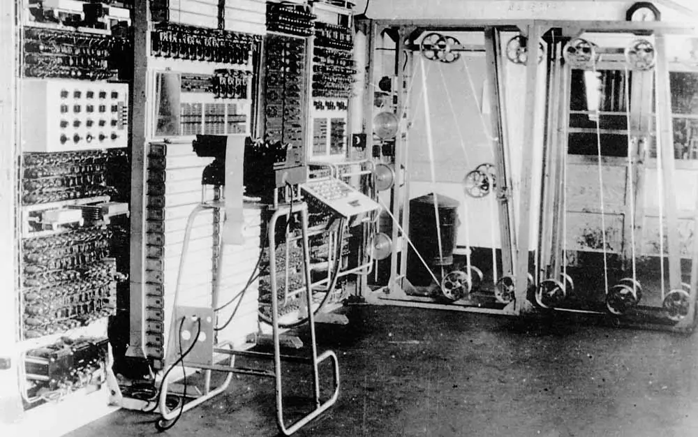
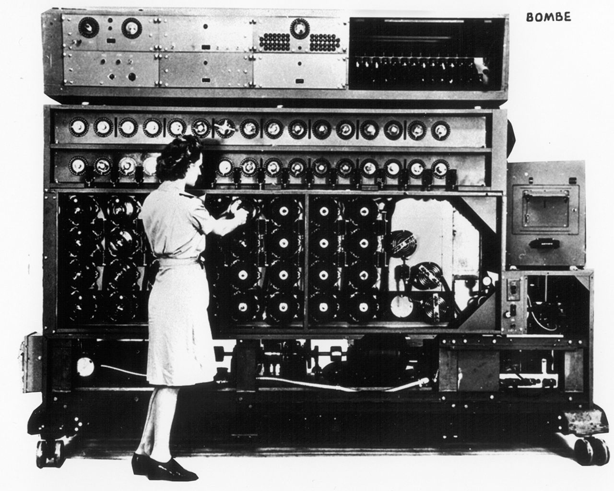

Our Technology
Code and Cipher Breaking
Here at bletchley., codebreaking is at the heart of what we do. From using bombes to break the Enigma code to processing high levels of signals intelligence every day, we are proud to have such an important role in the war. Breaking German Lorenz ciphers is an integral part of the war effort. bletchley. developed "Newmanry" machines designed to mechanise the process. These machines led to the development of the groundbreaking Colossus machine, the world's first semi-programmable machine. These codebreaking efforts give government and military officials unprecendented knowledge about German defenses and command communications.

A bombe is comprised of 100 rotating drums, 10 miles of wire, and about 1 million soldered connections.
Bombe
Bombes are used to break the German Enigma code. Women at bletchley. comprise a large portion of the team working with bombes.A bombe is comprised of 100 rotating drums, 10 miles of wire, and about 1 million soldered connections.